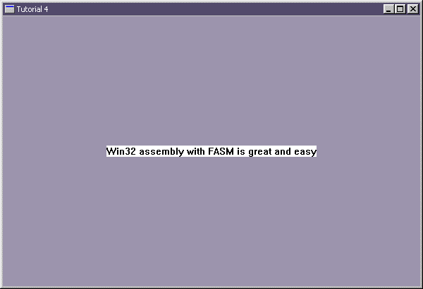

|
Tutorial 4 : Painting with Text
format PE GUI 4.0
entry start
include '%fasminc%\win32a.inc'
section '.data' data readable writeable
wHMain dd ?
wHInstance dd ?
wTitle db 'Tutorial 4',0
wClsName db 'TUT04',0
wMsg MSG
wCls WNDCLASS
;exp = experiment
expHdc dd ?
expPs PAINTSTRUCT
expRect RECT
expTxt db 'Win32 assembly with FASM is great and easy',0
section '.code' code readable executable
start:
; +------------------------------+
; | registering the window class |
; +------------------------------+
invoke GetModuleHandle,NULL
mov [wHInstance],eax
mov [wCls.hInstance],eax
mov [wCls.style],CS_HREDRAW or CS_VREDRAW
mov [wCls.lpfnWndProc],window_procedure
mov [wCls.lpszClassName],wClsName
mov [wCls.hbrBackground],COLOR_WINDOW+1
invoke LoadIcon,NULL,IDI_APPLICATION
mov [wCls.hIcon],eax
invoke LoadCursor,NULL,IDC_ARROW
mov [wCls.hCursor],eax
invoke RegisterClass,wCls
; +--------------------------+
; | creating the main window |
; +--------------------------+
invoke CreateWindowEx,\
0,\
wClsName,\
wTitle,\
WS_OVERLAPPEDWINDOW or WS_VISIBLE,\
CW_USEDEFAULT,\
CW_USEDEFAULT,\
CW_USEDEFAULT,\
CW_USEDEFAULT,\
NULL,\
NULL,\
[wHInstance],\
NULL
mov [wHMain],eax
; +---------------------------+
; | entering the message loop |
; +---------------------------+
window_message_loop_start:
invoke GetMessage,wMsg,NULL,0,0
or eax,eax
je window_message_loop_end
invoke TranslateMessage,wMsg
invoke DispatchMessage,wMsg
jmp window_message_loop_start
window_message_loop_end:
invoke ExitProcess,0
; +----------------------+
; | the window procedure |
; +----------------------+
proc window_procedure,hWnd,uMsg,wParam,lParam
push ebx esi edi ;eventhough the API would preserved, but play safe :p
cmp [uMsg],WM_PAINT
je wmPAINT
cmp [uMsg],WM_DESTROY
je wmDESTROY
wmDEFAULT:
invoke DefWindowProc,[hWnd],[uMsg],[wParam],[lParam]
jmp wmBYE
wmPAINT:
invoke BeginPaint,[hWnd],expPs
mov [expHdc],eax
invoke GetClientRect,[hWnd],expRect
invoke DrawText,\
[expHdc],\
expTxt,\
-1,\
expRect,\
DT_SINGLELINE or DT_CENTER or DT_VCENTER
invoke EndPaint,[hWnd],expPs
jmp wmBYE
wmDESTROY:
invoke PostQuitMessage,0
wmBYE:
pop edi esi ebx
return
endp
section '.idata' import data readable writeable
library KERNEL32, 'KERNEL32.DLL',\
USER32, 'USER32.DLL'
import KERNEL32,\
GetModuleHandle, 'GetModuleHandleA',\
ExitProcess, 'ExitProcess'
import USER32,\
RegisterClass, 'RegisterClassA',\
CreateWindowEx, 'CreateWindowExA',\
DefWindowProc, 'DefWindowProcA',\
ShowWindow, 'ShowWindow',\
LoadCursor, 'LoadCursorA',\
LoadIcon, 'LoadIconA',\
BeginPaint, 'BeginPaint',\
GetClientRect, 'GetClientRect',\
DrawText, 'DrawTextA',\
EndPaint, 'EndPaint',\
GetMessage, 'GetMessageA',\
TranslateMessage, 'TranslateMessage',\
DispatchMessage, 'DispatchMessageA',\
PostQuitMessage, 'PostQuitMessage'
Result :

|